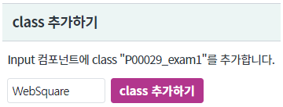
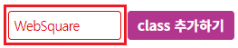
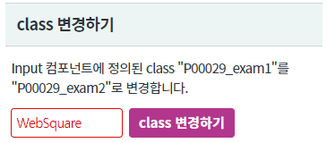
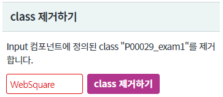
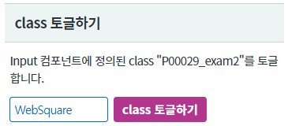
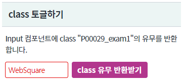

컴포넌트의 class를 제어하는 API 사용 예제입니다.
아래의 API로 class를 제어 할 수 있습니다. - class 추가 : addClass - class 변경 : changeClass - class 제거 : removeClass - class 토글 : toggleClass - class 유무 확인 : hasClass
InputBox에 class 추가하기
InputBox의 class 변경하기
InputBox의 class 제거하기
InputBox의 class 토글하기
InputBox의 class 유무 반환받기
컴포넌트에 class "P00029_exam1"를 추가합니다.
[브라우저(Chrome) 실행 예시]

InputBox 영역의 input의 테두리와 글자색이 붉은색으로 변경됩니다.
[브라우저(Chrome) 실행 예시]

컴포넌트에 class "P00029_exam1"를 "P00029_exam2"로 변경합니다.
[브라우저(Chrome) 실행 예시]

InputBox 영역의 input의 테두리와 글자색이 붉은색에서 푸른색으로 변경됩니다.
[브라우저(Chrome) 실행 예시]
컴포넌트에 class "P00029_exam1"를 제거합니다.
[브라우저(Chrome) 실행 예시]

InputBox 영역의 input의 테두리와 글자색의 붉은색이 제거됩니다.
[브라우저(Chrome) 실행 예시]
컴포넌트에 class "P00029_exam1"를 토글(있으면 제거, 없으면 추가)합니다.
[브라우저(Chrome) 실행 예시]

InputBox 영역의 input의 테두리와 글자색의 푸른색이 제거됩니다.
[브라우저(Chrome) 실행 예시]
-
InputBox 영역의 input의 테두리와 글자색의 푸른색으로 변경됩니다.
[브라우저(Chrome) 실행 예시]
컴포넌트의 class "P00029_exam1"의 유무를 반환받습니다.
[브라우저(Chrome) 실행 예시]

반환값 : true (data type : boolean) 이 alert 됩니다.
css 파일에 아래와 같이 두개의 class를 정의합니다. css 파일 경로 : /css/example.css
.P00029_exam1 { border-color: #e40a0a; color: #e40a0a; } .P00029_exam2 { border-color: #0070c0; color: #0070c0; }
//id가 ibx_exam1인 컴포넌트의 예시입니다. //컴포넌트의 class 속성에 "P00029_exam1" 추가하기 ibx_exam1.addClass("P00029_exam");
//id가 ibx_exam2인 컴포넌트의 예시입니다. //컴포넌트의 class 속성에 정의된 "P00029_exam1" class 제거하고 "P00029_exam2"를 추가한다. //oldClassName이 정의되어 있지 않은 경우에도 newClassName가 추가된다. ibx_exam2.changeClass("P00029_exam1", "P00029_exam2");
//id가 ibx_exam3인 컴포넌트의 예시입니다. //컴포넌트의 class 속성에 정의된 "P00029_exam1" class를 제거한다. ibx_exam3.removeClass("P00029_exam1");
//id가 ibx_exam4인 컴포넌트의 예시입니다. //컴포넌트의 class 속성에 정의된 "P00029_exam2" class를 토글한다. //P00029_exam2 class가 있으면 삭제, P00029_exam2 class가 없으면 추가 ibx_exam4.toggleClass("P00029_exam2");
//id가 ibx_exam5인 컴포넌트의 예시입니다. var tmpRet; //컴포넌트의 class 속성에 정의된 "P00029_exam1" 존재 유무를 boolean(true,false)으로 반환한다. tmpRet = ibx_exam5.hasClass("P00029_exam1");
addClass( className )
changeClass( oldClassName , newClassName )
removeClass( className )
toggleClass( className )
hasClass( className )